Meistä
Tuotamme lyhyttä fiktiota, dokumentteja, musiikkivideoita sekä keikkataltiointeja. Yhdistämme elokuvallisen kerronnan ja vahvan tuotannollisen osaamisen tarinoiksi, jotka jäävät elämään. Moderni ja monipuolinen kalusto tukenamme toteutamme projektit luotettavasti niin televisioon, valkokankaalle kuin yritystenkin tarpeisiin.
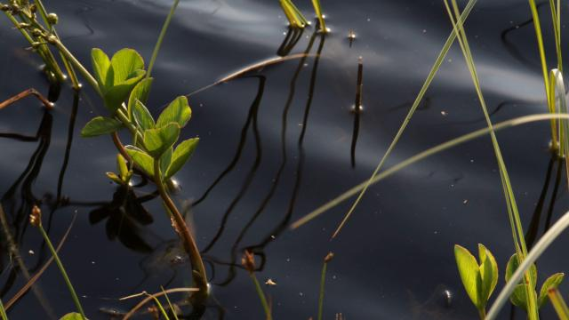
Heijastuksia
2026
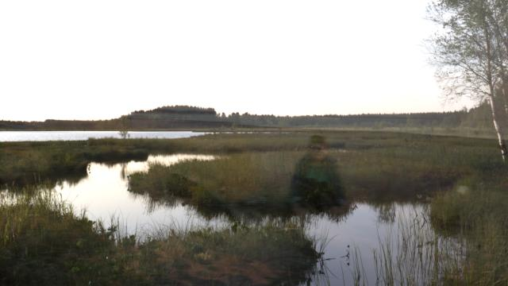
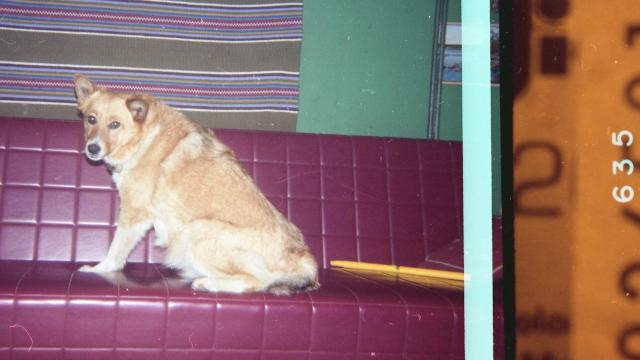
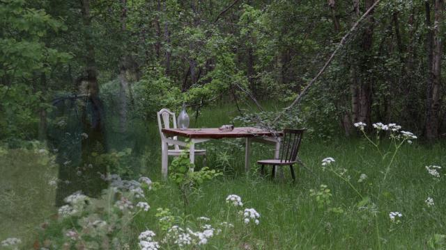
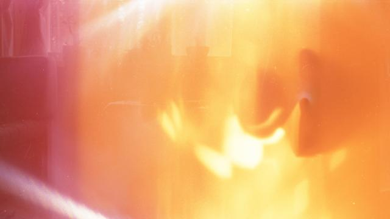
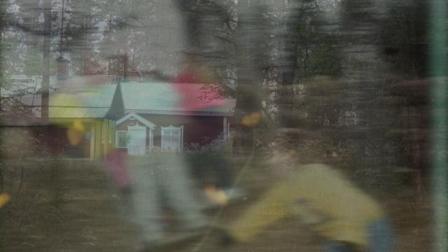
Heijastuksia on kokeellinen dokumenttielokuva, jossa filminegatiivit on kerrostettu lävitse vuosikymmenten.
Dokumentti, 9 minuuttia
Käsikirjoitus ja ohjaus: Miisa Korkiamäki
Tuotanto: Sebastian Kara
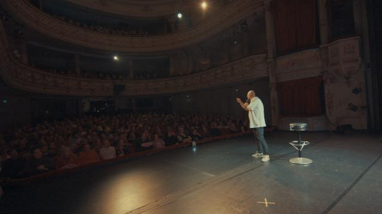
Ystävyysottelu
2025
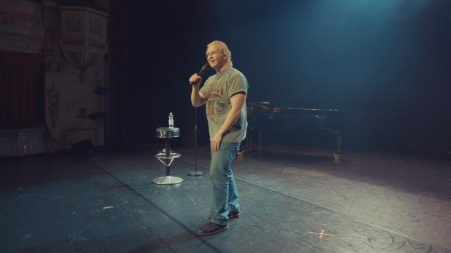
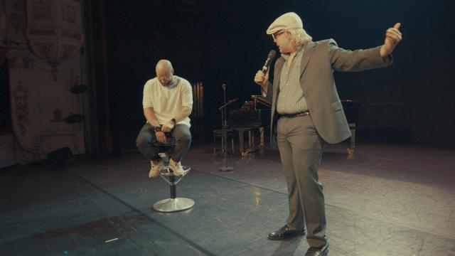
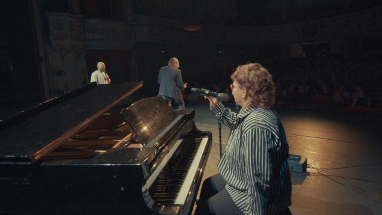
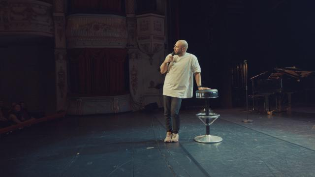
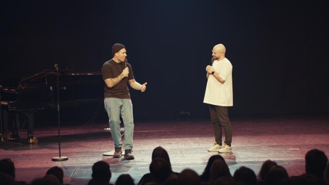
Lavalta ja yleisöstä käsin taltioitu dynaaminen stand up -ilta,
jossa koomikko Tomi Haustola kutsuu lavalle kolleegoitaan ja ystäviään.
Keikkataltiointi, 90 minuuttia
Tilaaja: Tomi Haustola
Ohjaus: Valtti Hyvärinen
Tuotanto: Sebastian Kara
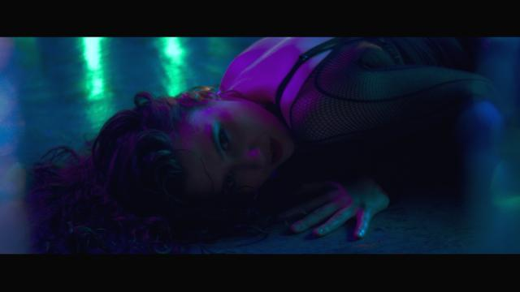
Let's Get Physical
2024
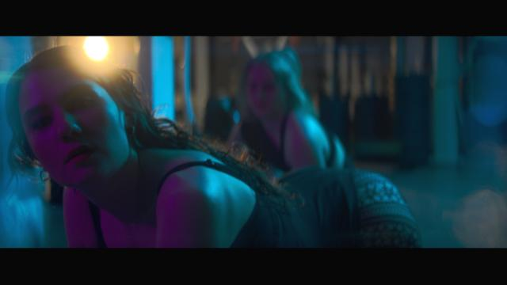
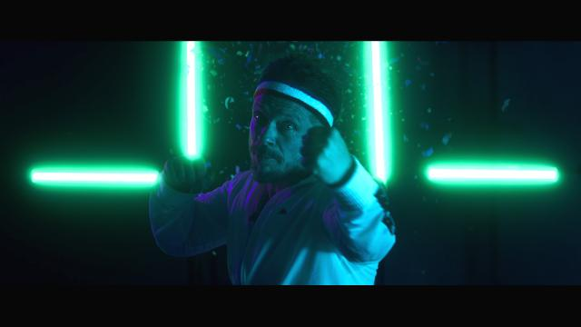
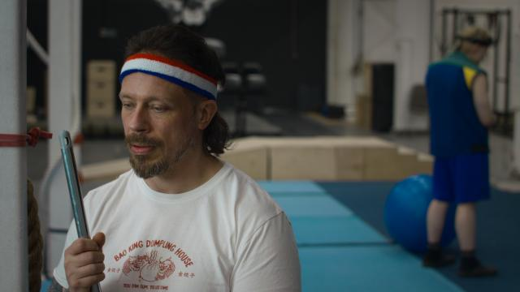
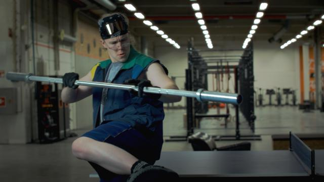
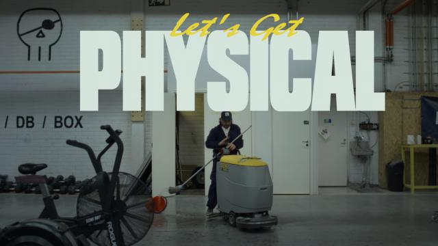
Koomikoiden täytteinen musiikkivideo kuntosalin siivoojan päiväunesta.
Musiikkivideo, 3 minuuttia
Tilaaja: Antti Akonniemi
Ohjaus: Valtti Hyvärinen
Tuotanto: Sebastian Kara
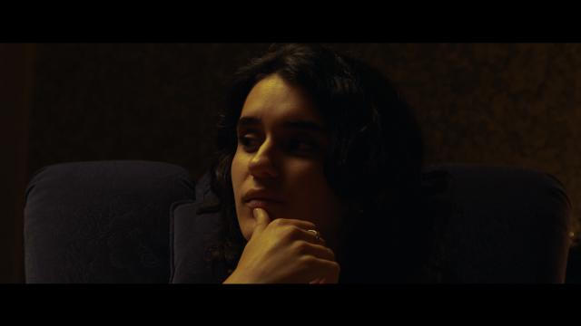
The Writer
2025
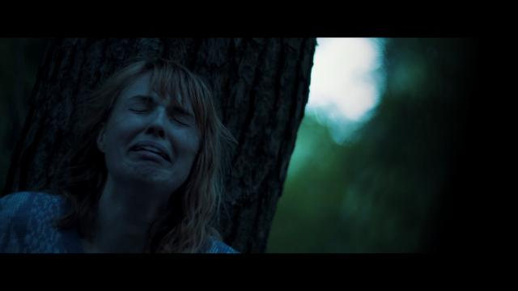
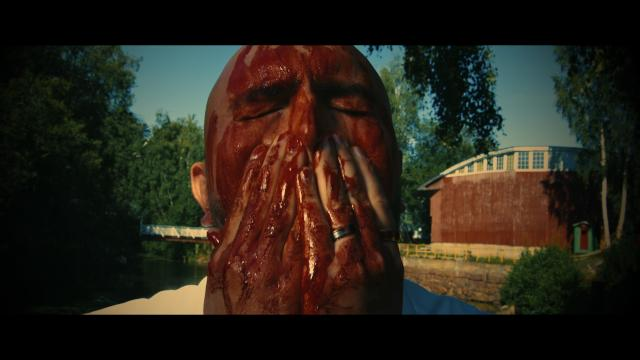
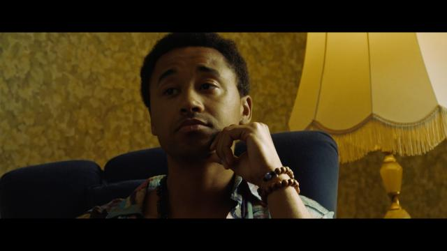
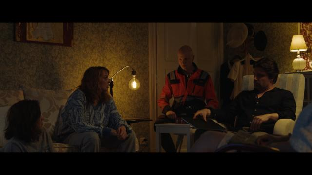
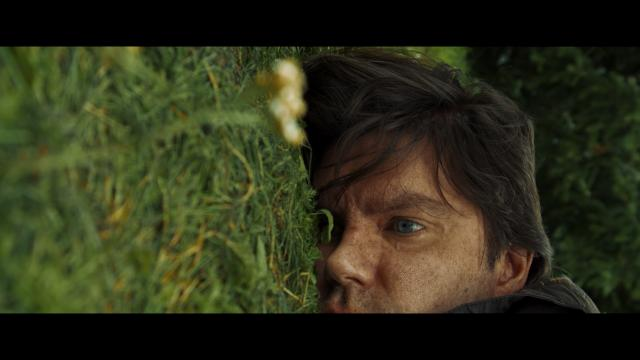
Joukko intohimoisia taiteilijoita kokoontuu viikoksi kirjoittamisretriitille, jossa heikommat karsitaan pois.
Lyhytelokuva, 36 minuuttia
Käsikirjoitus ja ohjaus: Darren Black
DOP: Valtti Hyvärinen
Tuotanto: Kolmifilmi & Aura Actors
Rooleissa: Matti Mustonen | Ilta Louhivuori | Riikka Korhonen | Andrea Puscasu | Kheba Touray
Salvador Esparza | Juho Hankela | Asta Sveholm | Carola Hakola | Heini Ryynänen
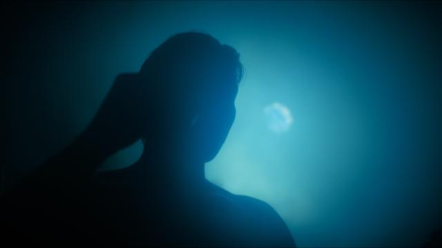
Meidän Valtakunta
2024
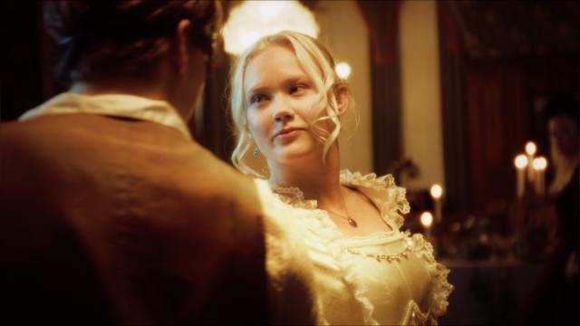
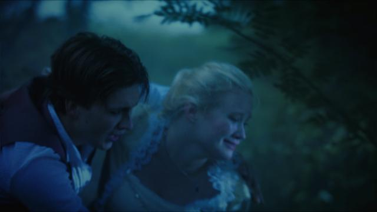
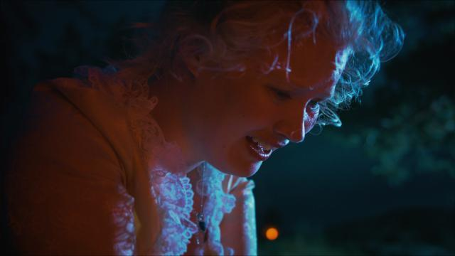
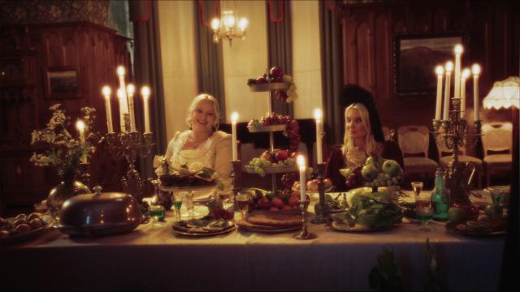
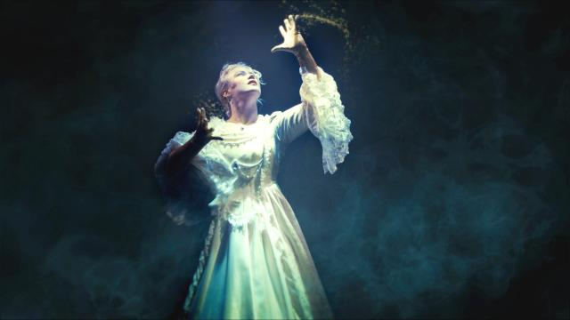
Iltasatujen ja fantasian kuvastolla leikittelevä tarina aikuisten onnelisista lopuista.
Lyhytelokuva, 7 minuuttia
Käsikirjoitus ja ohjaus: Valtti Hyvärinen
DOP: Pyry Rantanen
Tuotanto: Sebastian Kara
Rooleissa: Milja Taipale | Olavi Angervo | Satu Laine
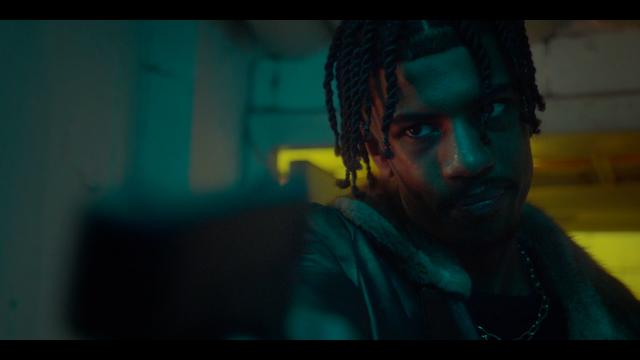
Taivaanranta
2022
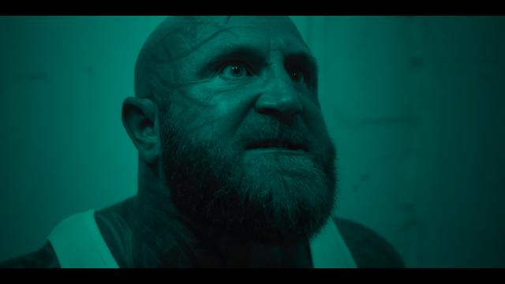
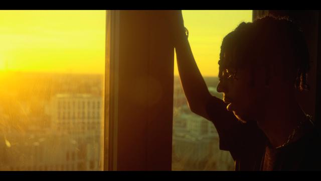
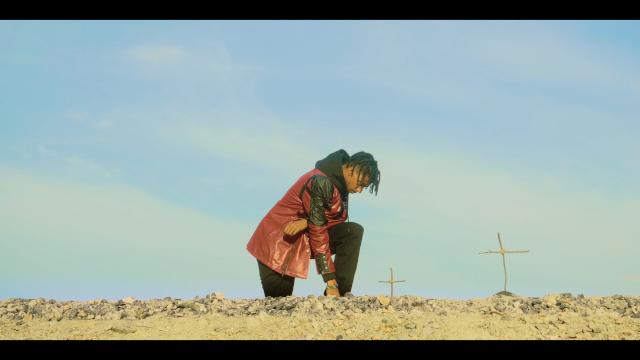
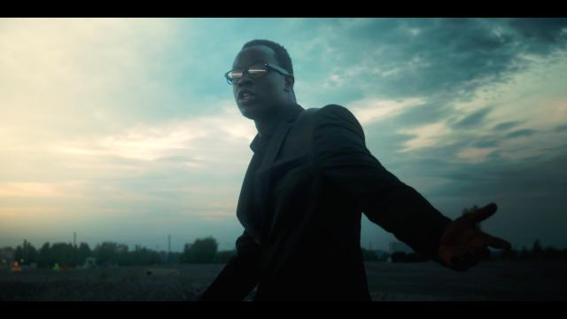
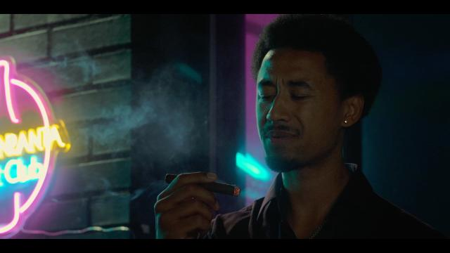
Tulevaisuuden kahtiajakautuneessa kaupungissa korruptoitunut hallitus ottaa katulapsen suojiinsa.
Lyhytelokuva, 22 minuuttia
Käsikirjoitus ja ohjaus: Valtti Hyvärinen
DOP: Jan Viljanen
Tuotanto: Sebastian Kara, Valtti Hyvärinen
Rooleisa: Mohamed El-Waber | Osla Räisänen | Adela Ogunbor
Keba Touray | Kalisto Amudeng | Aki Kivelä